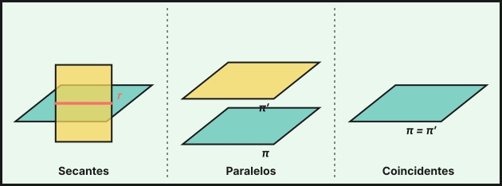
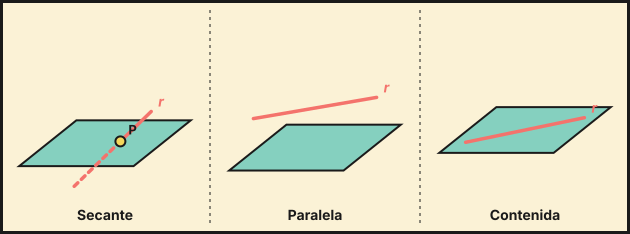
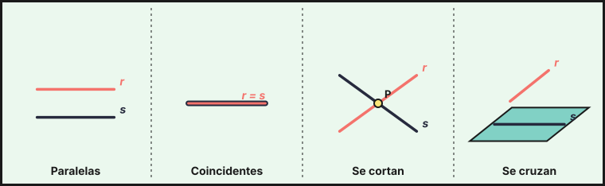
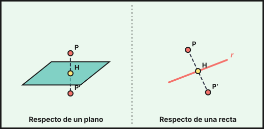

Rectas y planos en el espacio
1. Ecuaciones de la recta
Una recta \(r\) queda determinada por un punto \(P(p_1,p_2,p_3)\) y un vector director \(\vec d=(d_1,d_2,d_3)\).
| Forma | Ecuación |
|---|---|
| Vectorial | \((x,y,z)=(p_1,p_2,p_3)+\lambda(d_1,d_2,d_3)\) |
| Paramétricas | \(x=p_1+\lambda d_1,\quad y=p_2+\lambda d_2,\quad z=p_3+\lambda d_3\) |
| Continua | \(\dfrac{x-p_1}{d_1}=\dfrac{y-p_2}{d_2}=\dfrac{z-p_3}{d_3}\) |
| Implícita | dos planos: \(\begin{cases}Ax+By+Cz+D=0\\A'x+B'y+C'z+D'=0\end{cases}\) |
- Por dos puntos \(A\) y \(B\): \(P=A\) y \(\vec d=\overrightarrow{AB}\).
- De la forma implícita se pasa a la paramétrica resolviendo el sistema con una incógnita como parámetro. El vector director también es el producto vectorial de las normales de los dos planos.
2. Ecuaciones del plano
Un plano \(\pi\) queda determinado por un punto \(P\) y dos vectores directores \(\vec u,\vec v\) no paralelos, o por un punto y un vector normal \(\vec n=(A,B,C)\).
| Forma | Ecuación |
|---|---|
| Vectorial | \((x,y,z)=P+\lambda\vec u+\mu\vec v\) |
| General (implícita) | \(Ax+By+Cz+D=0\) |
Cómo pasar a la general: \(\vec n=\vec u\times\vec v\) y \(D=-\vec n\cdot P\). Equivalentemente: \[\left|\begin{matrix}x-p_1&y-p_2&z-p_3\\u_1&u_2&u_3\\v_1&v_2&v_3\end{matrix}\right|=0\]
Casos habituales:
- Por tres puntos \(A,B,C\): \(\vec u=\overrightarrow{AB}\), \(\vec v=\overrightarrow{AC}\).
- Por un punto y una recta: \(\vec u=\vec d\), \(\vec v=\overrightarrow{PQ}\) con \(Q\) de la recta.
- Perpendicular a una recta: \(\vec n=\vec d\).
- Plano mediador de \(A\) y \(B\): \(\vec n=\overrightarrow{AB}\) y pasa por el punto medio.
3. Posiciones relativas
Dos planos \(\pi:\ \vec n\cdot X+D=0\), \(\pi':\ \vec n'\cdot X+D'=0\):
| Situación | Condición |
|---|---|
| Se cortan en una recta | \(\vec n\) y \(\vec n'\) no proporcionales |
| Paralelos | \(\frac{A}{A'}=\frac{B}{B'}=\frac{C}{C'}\neq\frac{D}{D'}\) |
| Coincidentes | \(\frac{A}{A'}=\frac{B}{B'}=\frac{C}{C'}=\frac{D}{D'}\) |

Recta y plano: sustituye las paramétricas de la recta en el plano y obtén una ecuación en \(\lambda\).
- Una solución: la recta corta al plano en un punto.
- Ninguna solución: paralela (\(\vec d\cdot\vec n=0\) y el punto no está en el plano).
- Todo \(\lambda\): la recta está contenida en el plano.

Dos rectas \(r(P,\vec d)\) y \(s(Q,\vec e)\): mira el rango de \(\{\vec d,\vec e\}\) y el de \(\{\vec d,\vec e,\overrightarrow{PQ}\}\).
| Situación | \(\operatorname{rg}(\vec d,\vec e)\) | \(\operatorname{rg}(\vec d,\vec e,\overrightarrow{PQ})\) |
|---|---|---|
| Coincidentes | 1 | 1 |
| Paralelas | 1 | 2 |
| Se cortan | 2 | 2 |
| Se cruzan | 2 | 3 |

Tres planos forman un sistema \(3\times3\): se aplica Rouché (tema 3). \(\operatorname{rg}A=\operatorname{rg}A^*=3\): se cortan en un punto; rangos \(2\) y \(2\): en una recta; rangos \(2\) y \(3\): se cortan dos a dos o dos son paralelos; rangos \(1\) y \(1\): coincidentes; rangos \(1\) y \(2\): paralelos (o dos coincidentes y el tercero paralelo).
4. Ángulos
- Entre dos rectas: \(\cos\alpha=\dfrac{|\vec d\cdot\vec e|}{|\vec d|\,|\vec e|}\).
- Entre dos planos: \(\cos\alpha=\dfrac{|\vec n\cdot\vec n'|}{|\vec n|\,|\vec n'|}\).
- Entre recta y plano: \(\sin\alpha=\dfrac{|\vec d\cdot\vec n|}{|\vec d|\,|\vec n|}\) (seno, no coseno).
5. Distancias
- Punto \(P_0(x_0,y_0,z_0)\) a un plano \(Ax+By+Cz+D=0\): \(\ d=\dfrac{|Ax_0+By_0+Cz_0+D|}{\sqrt{A^2+B^2+C^2}}\)
- Punto \(P_0\) a una recta \(r(P,\vec d)\): \(\ d=\dfrac{|\overrightarrow{PP_0}\times\vec d|}{|\vec d|}\)
- Entre dos planos paralelos: distancia de un punto de uno al otro.
- Recta paralela a un plano: distancia de un punto de la recta al plano.
- Entre dos rectas paralelas: distancia de un punto de una a la otra.
- Entre dos rectas que se cruzan \(r(P,\vec d)\), \(s(Q,\vec e)\): \(\ d=\dfrac{|[\overrightarrow{PQ},\vec d,\vec e]|}{|\vec d\times\vec e|}\)
6. Proyecciones y simétricos
Proyección ortogonal de un punto \(P_0\) sobre un plano \(\pi\): traza la recta perpendicular por \(P_0\) (dirección \(\vec n\)) y corta con \(\pi\). Simétrico \(P_0'=2H-P_0\), con \(H\) la proyección.

Proyección de \(P_0\) sobre una recta \(r\): traza el plano perpendicular a \(r\) por \(P_0\) (normal \(\vec d\)) y corta con \(r\). El simétrico se obtiene igual: \(P_0'=2H-P_0\).
Recta que pasa por \(P_0\) y corta perpendicularmente a \(r\): tiene dirección \(\overrightarrow{P_0H}\), con \(H\) la proyección de \(P_0\) sobre \(r\).
- Recta: punto + vector director. Plano: punto + normal, \(\vec n=\vec u\times\vec v\).
- Recta–plano: sustituir en el plano y mirar el número de soluciones.
- Rectas: comparar los rangos de \(\{\vec d,\vec e\}\) y \(\{\vec d,\vec e,\overrightarrow{PQ}\}\).
- Ángulo recta–plano: usa el seno.
- Distancia a un plano: \(\frac{|Ax_0+By_0+Cz_0+D|}{|\vec n|}\).
- Simétrico: \(2H-P_0\) con \(H\) la proyección.